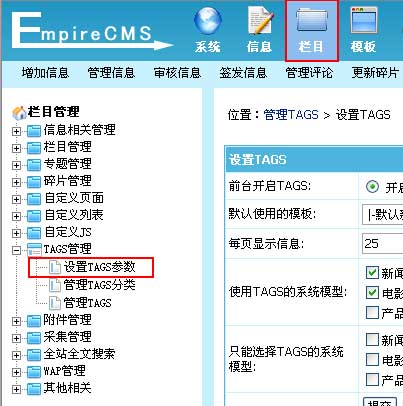
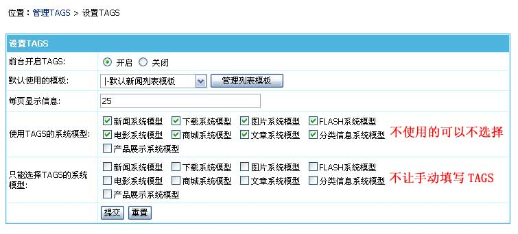
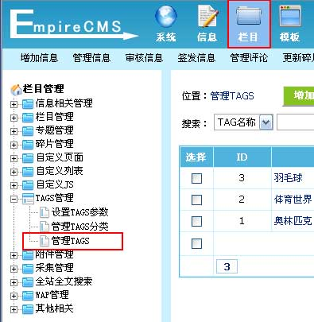
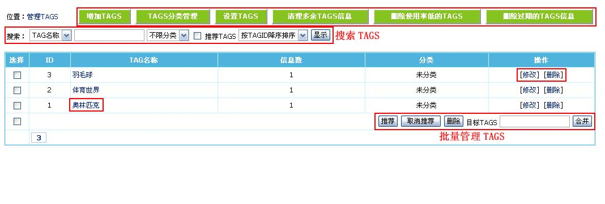
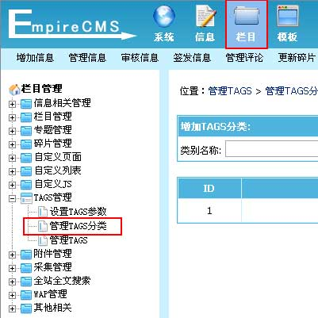
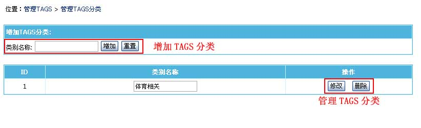

| 一、TAGS功能介绍 |
| 帝国CMS的tags功能不仅是作为tags信息列表使用，而且是将tags作为自定义分类来使用，可按TAGS调用信息，可以实现碎片同样的功能，只是tags随时都能分类，更加灵活。比如：某一专题的信息，现在可以不用专题了，直接用tags就可以调用出相同tags名称的专题信息。 |
| 帝国CMS的TAGS功能有以下特点： |
| (1)、TAGS分类管理：可对TAGS进行分类 (2)、管理TAGS (3)、TAGS参数设置：可设定启用TAGS的系统模型和只能选择TAGS的系统模型等 (4)、新增TAGS调用标签：可按分类/推荐等属性调用TAGS “[showtags]分类ID,显示数量,每行显示数量,显示排序,只显示推荐,推荐TAGS属性,显示间隔符,是否显示信息数,链接附加参数[/showtags]” (5)、TAGS信息标签调用：标签可按TAGS调用对应信息 “[tagsinfo]TAGS的ID,显示条数,标题截取数,标签模板ID,栏目ID,系统模型ID[/tagsinfo]” (6)、清理多余TAGS信息 (7)、删除使用率低TAGS信息 (8)、删除过期TAGS信息 (9)、合并TAGS |
| 二、前台TAGS页面语法 |
| 前台TAGS访问地址： |
| “/e/tags/?tagid=TAG的ID”或者“/e/tags/?tagname=TAG的名称” |
| 附加语法说明： |
| 1、变量 classid 指定只显示某一栏目的TAGS信息，例如：/e/tags/tagid=1&classid=2 |
| 2、变量 mid 指定只显示某一系统模型的TAGS信息，例如：/e/tags/tagid=1&mid=1 |
| 3、指定信息发布起始和结束时间范围：起始时间变量名：starttime ；结束时间变量名：endtime，例如：/e/tags/tagid=1&starttime=2011-04-20&endtime=2011-05-20 |
| 4、变量 line 指定每页显示信息数，例如：/e/tags/tagid=1&line=30 |
| 5、变量 tempid 指定使用的列表模板，例如：/e/tags/tagid=1&tempid=1 |
| 三、设置TAGS参数 | ||||||||||
| 1、登录后台，单击“栏目”菜单，选择“设置TAGS参数”子菜单，进入设置TAGS参数界面： | ||||||||||
|  | ||||||||||
| 2、进入设置TAGS参数界面，如下图： | ||||||||||
|  | ||||||||||
|
| 四、管理TAGS | ||||||||||||||||
| 1、登录后台，单击“栏目”菜单，选择“管理TAGS”子菜单，进入管理TAGS界面： | ||||||||||||||||
|  | ||||||||||||||||
| 2、进入管理TAGS界面，如下图： | ||||||||||||||||
|  | ||||||||||||||||
|
| 五、管理TAGS分类 |
| TAGS分类方便统一管理TAGS，以及前台按TAGS分类调用TAGS。 |
| 1、登录后台，单击“栏目”菜单，选择“管理TAGS分类”子菜单，进入管理TAGS分类界面： |
|  |
| 2、进入管理TAGS分类界面，如下图： |
|  |